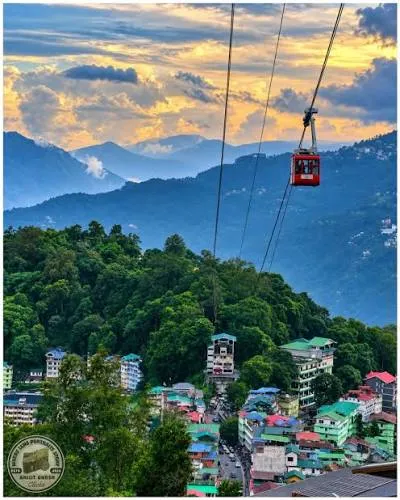
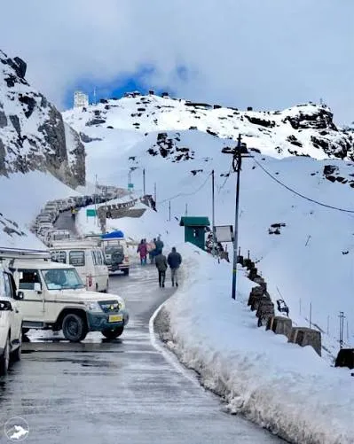
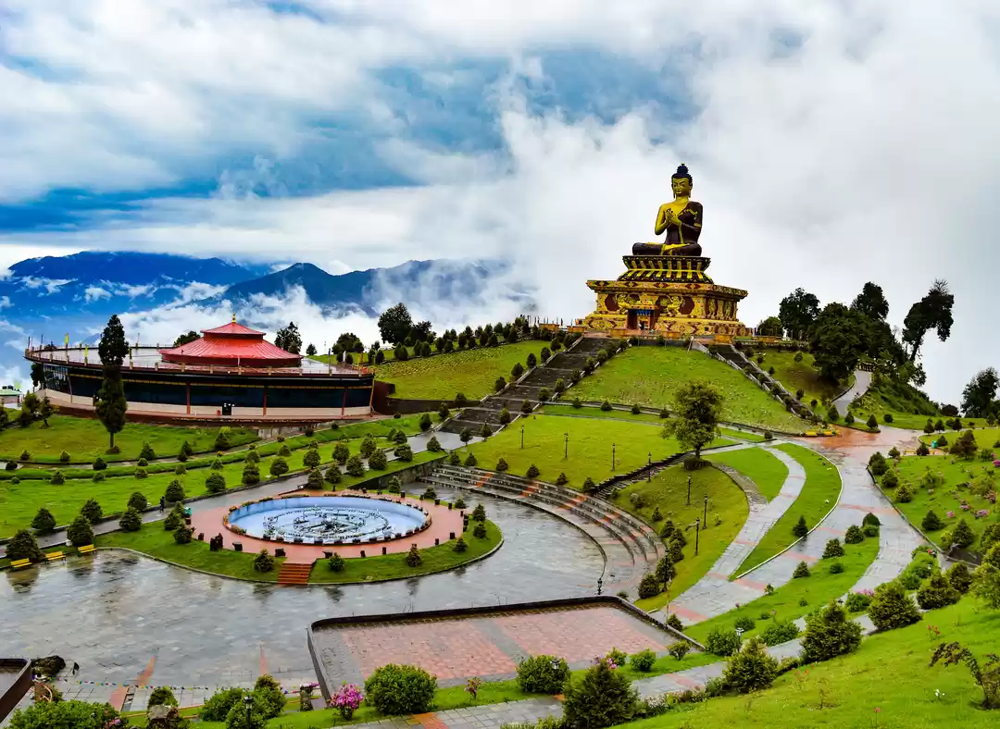

Sikkim & Darjeeling · −20%
SIKKIM- DARJEELING (via PELLING) 5N-6D
Sikkim - The Himalayan Paradise
Overview
The Sikkim–Darjeeling 5 Nights/6 Days tour via Pelling is a wonderful journey through the scenic mountains of Northeast India, offering a perfect combination of nature, culture, monasteries, and breathtaking Himalayan views. The trip begins with exploring the beautiful landscapes of Sikkim, followed by a visit to Pelling, a peaceful hill destination famous for its stunning views of the Kanchenjunga range, monasteries, waterfalls, and lush green valleys. The journey then continues to Darjeeling, one of India’s most popular hill stations, known for its famous tea gardens, colonial charm, toy train, and spectacular sunrise views over the Himalayas. During the tour, travelers can enjoy beautiful mountain roads, local cuisine, traditional culture, peaceful surroundings, and refreshing weather. This 5 Nights/6 Days Sikkim–Darjeeling tour via Pelling is ideal for tourists looking for a memorable Himalayan holiday filled with scenic beauty, relaxation, and unforgettable experiences.
Journey highlights
- A classic 5-night/6-day Sikkim and Darjeeling tour via Pelling covers Bagdogra/NJP to Gangtok
- Tsomgo Lake
- Pelling and finishes in Darjeeling. This route blends mountain views
- high-altitude lakes
- cultural landmarks
- and tea garden
Day by day
The itinerary
-
Day 1
New Jalpaiguri Railway Station(NJP)/Bagdogra Airport(IXB) – Gangtok (130 km/4 hrs drive)
Arrival at NJP/Bagdogra. After a warm welcome, our representative will drive you to Gangtok (1437 m) and assist you to check in at the hotel. Freshen up and relax for some time. In the evening, you can go for a stroll on the MG Marg. Stay overnight at the hotel.
Pickup from **Bagdogra Airport / New Jalpaiguri Railway Station Transfer to **Gangtok (4–5 hrs) Check-in & relax Evening: Walk at **MG Marg
-
Day 2
Tsomgo Lake, Baba Mandir & Nathula Pass
After a leisurely breakfast, at around 8 am leave for Tsomgo Lake (12,400 ft/3750 m/3 hrs drive) and Baba Harbhajan Mandir( 13,200 ft/4000 m). The zig-zag road through craggy mountain terrain takes you to Tsomgo Lake. Located at an altitude of 12,400 ft, the lake is enveloped in ethereal beauty and is considered sacred. The lake dons different looks in different seasons. In winters it gets covered in snow while in spring colourful flowers around the lake add life to it. Baba Harbhajan Mandir or the shrine is a must-visit place of Sikkim as it is dedicated to Baba Harbhajan Singh who was a brave Indian soldier. While carrying supplies to a remote post he died near the Nathula Pass in eastern Sikkim due to bad weather condition. After the excursion, we will drive you back to Gangtok. Stay overnight at the hotel. Note: You can also visit Nathula Pass on the same day at an additional cost. Nathula Pass is located at an altitude of 14,140 feet and is one of the highest motorable passes of India. It is one of the oldest trading border posts linking India and Tibet.
After Breakfast Visit Tsomgo (Changu) Lake Baba Mandir Optional: Nathula Pass (subject to permit, weather and road conditions) Return to Gangtok Evening free at MG Marg Overnight: Gangtok
-
Day 3
Gangtok – Pelling(120 km/5.5 hrs drive)
After breakfast, we will drive you to Pelling. The journey from Gangtok to Pelling is pleasing as you will drive past the gorgeous tea gardens, majestic mountains, and scenic landscape. Pelling is a lovely town located amidst the pine forest. It offers great views of snow-capped mountains and the might Kangchenjunga. It is also a home to age-old monasteries. After a long drive of more than 5 hours you will be tired, so take rest and spend the rest of the day at leisure.
Breakfast and checkout Drive to Pelling (approx. 4–5 hrs) En route, Check in at Pelling Evening at leisure Overnight: Pelling
-
Day 4
Pelling local sightseeing & transfer to Darjeeling.
DAY 5 : Pelling (Full day local sightseeing) After breakfast, get ready to explore the local attractions of Pelling. Start with Kanchenjunga waterfalls which will surely rejuvenate you to the hilt with its gushing water and green surroundings. Then head to the picturesque Sewaro rock garden full of greenery and beauty. Next on the list is Darap Valley which is a scenic retreat. Take a break for lunch and continue with the sightseeing visiting Pema Yangtse monastery, Helipad Ground, Rimbi waterfalls, Khecheopalri sacred Lake and Rabdentse Ruins. The drive may not be very smooth but on the journey, you will come across gorgeous green gardens, rivers, quaint villages and old bridges. Reach the hotel in Darjeeling, check in and stay overnight.
Morning sightseeing in Pelling: **Sky Walk Pelling **Pemayangtse Monastery **Rabdentse Ruins Transfer to Darjeeling
-
Day 5
Darjeeling(Full day local sightseeing)
Begin the journey early morning (around 4 am) and drive to the famous Tiger Hill (2590 m) to treat your senses with mind-blowing views of the sunrise over Mt. Kanchenjunga. It is the highest point of this hill station. While coming back from there visit Batasia Loop and Ghoom Monastery. Enjoy a good breakfast and then visit Japanese Temple which reflects traditional Japanese architecture and is a well known Buddhist pilgrimage. Other attractions which will be covered are Padmaja Naidu Himalayan Zoological Park(closed on Thursday), Himalayan Mountaineering Institute, Tenzing Rock, Peace Pagoda and Chitrey Tea Garden(outer view). In the evening take a stroll along the Mall Road.
Early morning sunrise at **Tiger Hill Visit: **Batasia Loop **Ghoom Monastery Later sightseeing: **Himalayan Mountaineering Institute **Padmaja Naidu Himalayan Zoological Park **Tea Garden
-
Day 6
Darjeeling – (NJP)/Bagdogra Airport(IXB) (88 km/3 hrs drive)
After breakfast, check out from the hotel and we will drive you back to New Jalpaiguri Railway Station(NJP)/Bagdogra Airport(IXB) – Gangtok with memories to cherish for long!
Transfer to **Bagdogra Airport / New Jalpaiguri Railway Station Tour ends with beautiful memories
Included
- Reserved vehicle for Transfer & Sightseeing.
- All sightseeing as per the Tour Itinerary.
- Night stay in Hotel
- Accommodation in Hotel What's Excluded
- Any personal expenses.
- All Taxes and Permits etc. for Darjeeling and Sikkim
- Any other not mentioned in includes Para.
Not included
- Any personal expenses.
- All Taxes and Permits etc. for Darjeeling and Sikkim
- Any other not mentioned in includes Para.
Gallery
Scenes from the route





Reserve this journey